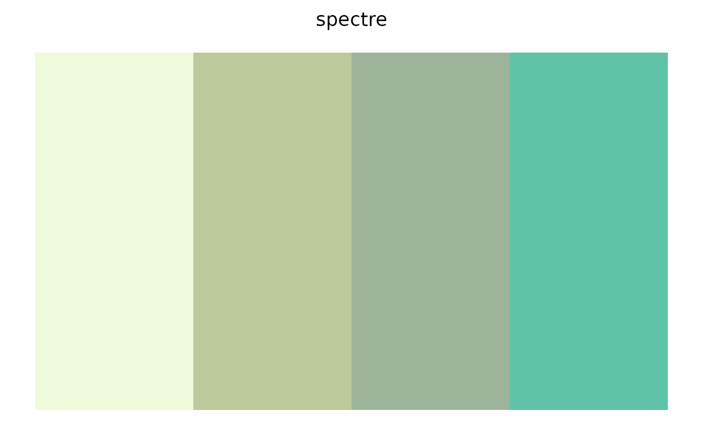
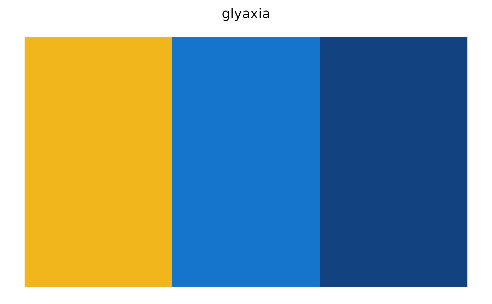
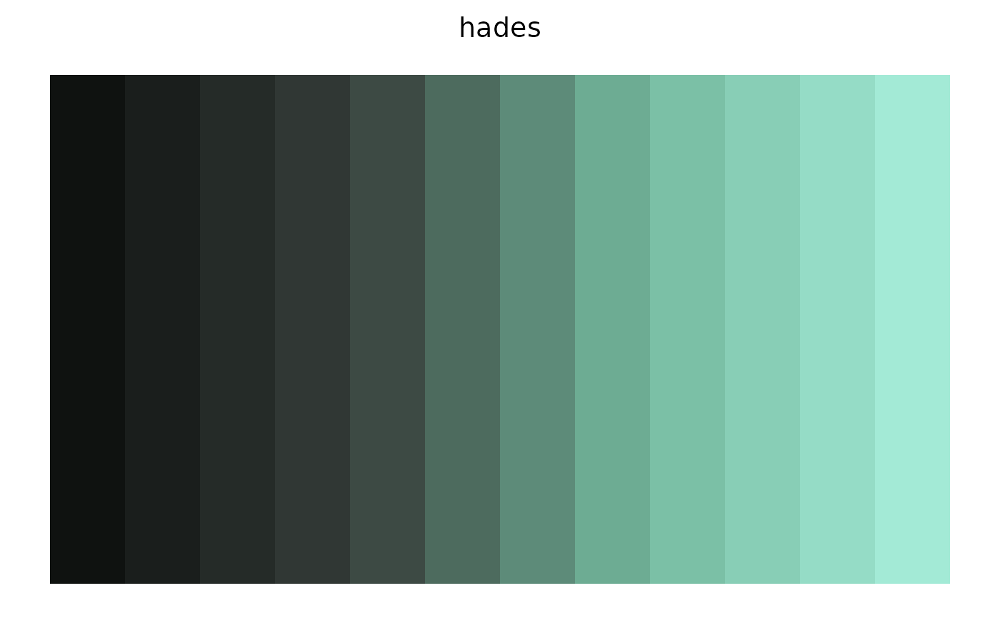
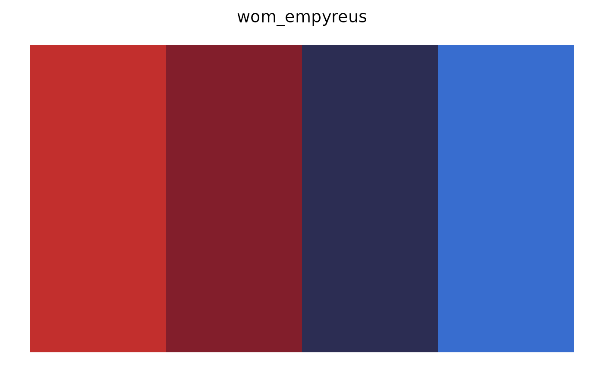
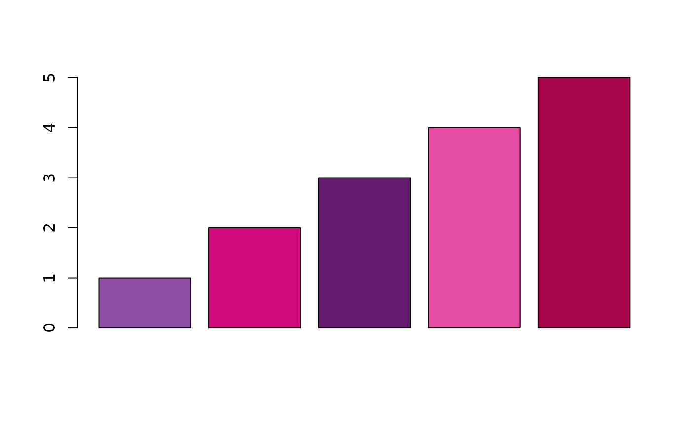

Returns n colors from the named colorway, either the first n curated
colors (type = "discrete") or n colors interpolated across the whole
palette (type = "continuous").
Usage
glyos_palette(
name,
n = NULL,
type = c("discrete", "continuous"),
strict = TRUE,
sort = FALSE
)Arguments
- name
Palette name. Case-insensitive; see
glyos_palette_names().- n
Number of colors wanted. Defaults to every color in the palette.
- type
Either
"discrete"(default) to return the curated colors as they are, or"continuous"to interpolatencolors across the palette withgrDevices::colorRampPalette().- strict
Logical. For discrete palettes, error when
nexceeds the number of curated colors (default). IfFALSE, interpolate toncolors instead.- sort
Logical. If
TRUE, order the colors from darkest to lightest (by CIE lightness) before selecting or interpolating. Useful when a palette is used as a sequential gradient; seeglyos_find_palettes().
Value
A character vector of hex colors with class "glyos_palette", which
has a print method that draws the swatches.
Examples
glyos_palette("spectre")
#> Glyos colorway 'spectre' (4 colours)
#> Onell Design / Glyos: Spectre
#> #EEFADA #BCC99B #9EB49A #5FC3A8

glyos_palette("glyaxia", 3)
#> Glyos colorway 'glyaxia' (3 colours)
#> Onell Design / Glyos: Glyaxia Command
#> #F2B61D #1575CC #124380

glyos_palette("hades", 12, type = "continuous")
#> Glyos colorway 'hades' (12 colours)
#> Onell Design / Glyos: Hades Force
#> #0F1210 #1A1E1C #252B28 #303734 #3D4A44 #4D6B5E #5D8B79 #6DAC93 #7BC0A6 #88CEB6 #95DCC6 #A3EAD6

glyos_palette("hades", 12, type = "continuous", sort = TRUE)
#> Glyos colorway 'hades' (12 colours)
#> Onell Design / Glyos: Hades Force
#> #0F1210 #1A1E1C #252B28 #303734 #3D4A44 #4D6B5E #5D8B79 #6DAC93 #7BC0A6 #88CEB6 #95DCC6 #A3EAD6
glyos_palette("wom_empyreus")
#> Glyos colorway 'wom_empyreus' (4 colours)
#> Spy Monkey Creations / Weaponeers of Monkaa: Empyreus
#> #C22F2D #821E2B #2C2D53 #386DCF

# base graphics
barplot(1:5, col = glyos_palette("gatekeeper"))
